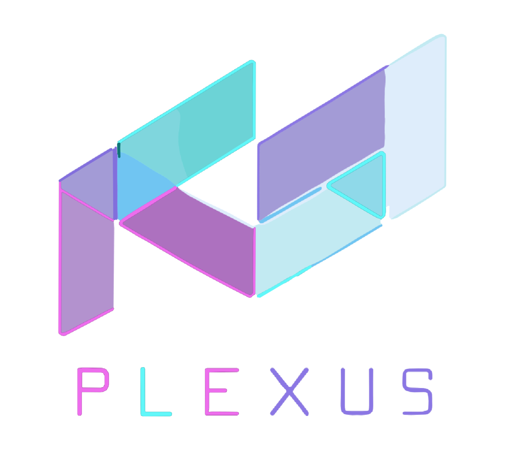

🔄 Loading Dynamic Nodes...
Scanning node directories...
🎮
3D
SET
LOG
DBG
‹

💾 Save Network
Network Name:
Description:
Category:
Custom
Math
Vector
Logic
Data
Effects
Save as Custom Node
Creates a reusable node that can be added to other graphs
Auto-detected Inputs:
Auto-detecting...
Auto-detected Outputs:
Auto-detecting...
Node Color:
Green (Default)
Blue
Orange
Purple
Red
Brown
💾 Save
Cancel
📂 Load Network
Cancel
Loading...